07.31.2009 09:41
USCG oil identification
Video - Coast Guard Marine Safety Lab [Coast Guard News]
Works well when combined with AIS to see which vessels to compare against.
Works well when combined with AIS to see which vessels to compare against.
07.31.2009 09:08
NOAA and Navy tides
Last summer, I
blogged about the NOAA online
tides and water level course.
Thanks to Eric S. at NAVO and Monica, I now know that the Naval Oceonographic office probably also uses 6 minute tide. Eric pointed us to this document, which I had not known about:
Computational Techniques for Tidal Datums Handbook, NOAA Special Publication NOS CO-OPS 2 [NOAA]. Turns out that our summer hydro classes use this, but does not document how the data is averaged down to 6 minutes. If anyone knows where the 3 or 4 official NOAA water level cleaning algorithms are documented that would be a great help. I've got several personal communications from people on the topic, but nothing official.
Eric also pointed to http://tidesandcurrents.noaa.gov/pub.html
In related news, back in November 2008, I mentioned the Castine, ME tidal anomaly. That anomaly did not show up in the NOAA 6 minute averaged data at the nearest station. To me, that indicates that water level stations should store higher temporal resolution, even if most applications are driven by downsampled and smoothed 6 minute averaged data.
Now NOAA is reporting:
ALERT: East Coast water levels are currently running above predicted tides
Thanks to Eric S. at NAVO and Monica, I now know that the Naval Oceonographic office probably also uses 6 minute tide. Eric pointed us to this document, which I had not known about:
Computational Techniques for Tidal Datums Handbook, NOAA Special Publication NOS CO-OPS 2 [NOAA]. Turns out that our summer hydro classes use this, but does not document how the data is averaged down to 6 minutes. If anyone knows where the 3 or 4 official NOAA water level cleaning algorithms are documented that would be a great help. I've got several personal communications from people on the topic, but nothing official.
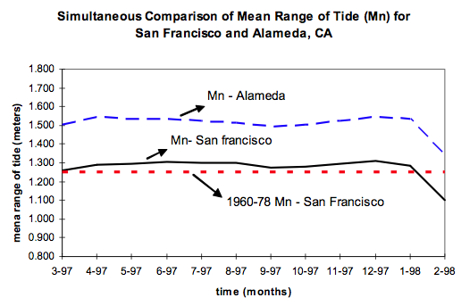
Eric also pointed to http://tidesandcurrents.noaa.gov/pub.html
In related news, back in November 2008, I mentioned the Castine, ME tidal anomaly. That anomaly did not show up in the NOAA 6 minute averaged data at the nearest station. To me, that indicates that water level stations should store higher temporal resolution, even if most applications are driven by downsampled and smoothed 6 minute averaged data.
Now NOAA is reporting:
ALERT: East Coast water levels are currently running above predicted tides
Starting in early June 2009, observed tides have been increasingly elevated above predicted tidal elevations along the entire U.S. East Coast from Maine to the east coast of Florida. During the period from June 19 thru June 24 for instance, these water levels were running between 0.6 to 2.0 feet above normal depending upon location. As of July 1, these anomalies continue, but running lower at 0.3 to 1.0 ft. above normal. It is not unusual for smaller regions and estuaries along the U.S. East Coast to experience this type of anomalous event at this time of year, however the fact that the geographic extent of this event that includes the entire East Coast event is anomalous. CO-OPS will continue to monitor this event and will provide further information on the causes, amplitudes, geographic extent, and the duration of the event.This even made Wired: Mysteriously High Tides on East Coast Perplex Scientists
... NOAA is rushing to study the data in an effort to understand what happened. Szabados' office is already putting the finishing touches on a report that will be released next month on the wind and current patterns that appear to be correlated with the tidal surge. Szabados said that two main factors appear to have contributed to the extra high tides. First, there were steady winds out of the northeast throughout this anomaly. Second, the ocean current running from Florida up along the coast weakened. While the associations between these phenomena and the tides are provocactive, it's too early to tell how fully they explain this unexpected tidal event. ...
07.30.2009 14:46
OpenCalais
Matt Plumlee just discovered this
resource for document analysis: OpenCalais. He tried it on
some NOAA Coast Pilot text. (click on "Document Viewer")
Here is a stripped down view of the RDF results:
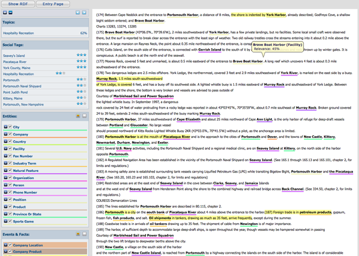
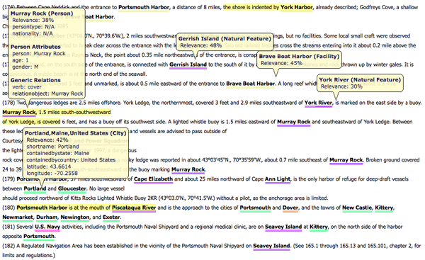
Here is a stripped down view of the RDF results:
City: Boston, Durham, Exeter, Gloucester, Kittery, New Castle, Newington, ... Company: C. H. Sprague & Son Co., C. H. Sprague and Son Co., Cable Co., Dover, Granite State Minerals Inc., ... Country: Jamaica, United States Facility: Brave Boat Harbor, Coast Guard station, Fort McClary, Fort Point, ... FaxNumber: 603 IndustryTerm: Oil shipments, east bank, electricity, fish products, fuel oil, large and conspicuous white hotel, ... NaturalFeature: Back Channel, Badgers Island, Bellamy River, Bellamy river, Cape Elizabeth, Chauncey Creek, ... Organization: ETA, Federal government, Marblehead Sail and Power Squadron, Navigation Subcommittee of the Maine, ... Person: Ann Light, Bell Buoy, Murray Rock PhoneNumber: 603 Position: Captain, Coast Guard, Portsmouth Harbor Coast Guard, The Coast Guard, head, head of navigation Product: Pilotage ProvinceOrState: Maine, New HampshireThen later in the results are marked up results:
<rdf:Description rdf:about="http://d.opencalais.com/genericHasher-1/25395034-9139-34ea-a4f3-365c361823f8"> <rdf:type rdf:resource="http://s.opencalais.com/1/type/em/e/NaturalFeature"/> <c:name>York River</c:name> </rdf:Description>Not perfect, but definitely helpful in working through understanding what Feature-Base metadata needs to be added to a marked-up version of a document.
07.30.2009 07:56
Flip
I've been able to walk around Flip
while it was at the dock. It's pretty crazy with a toilet on the
"wall" and a swinging kitchen range. To go out on it while at sea
would be an amazing experience.
07.29.2009 17:34
which AIS packets am I receiving?
I finally made a simple script that
prints out which message types that I'm seeing in a feed without
doing any real decoding. It just looks at the first letter to see
what kind of message it is:
% ais_nmea_summary.py 20080407.log.norm 20080407.log.norm: 1 195005 Position, Class A 3 16825 Base station report 4 31641 Ship and Cargo 5 7096 Addressed binary message 6 3 ACK for addressed binary message 7 3 Binary broadcast message (BBM) 8 10089 SAR Position : 47 UTC and date response (same format as 4) ; 13 ASRM < 4 ASRM Ack = 5 SRBM > 5 Interrogation ? 4 Assigned mode command A 5 Position, Class B B 3 Position and ship, Class B C 2 Data link management D 4 Aids to navigation report G 10 Static data report H 3 Single slit binary message - addressed or broadcast I 10 Multi slot binary message with comm state J 6 Unknown (27) K 4 Unknown (28) L 5 Unknown (29) M 4 Unknown (30) N 11 Unknown (31) O 24 Unknown (32) P 1 Unknown (33)
07.29.2009 14:24
US / Canadian collaboration in the Arctic for mapping
Link courtesy of Roland A.
Arctic seabed mapping renewed by Canada, U.S. [CBC.ca]
See also: Ship Photo of the Week - USCGC Healy and CCGS Louis S. St-Laurent [gCaptain]
Arctic seabed mapping renewed by Canada, U.S. [CBC.ca]
Researchers for Canada and the United States are working together again this summer to map more of the Arctic seabed, gathering scientific data toward bolstering their own sovereign claims. The two countries are preparing for their second joint mapping expedition to map largely unknown parts of the Canada Basin, north of the Beaufort Sea. A similar mission took place last summer. The 41-day mission will begin next week, with the U.S. Coast Guard cutter Healy and the Canadian Coast Guard icebreaker Louis St. Laurent meeting in the Beaufort Sea before heading as far north into the Canada Basin as the ice will allow. "We have better maps of the moon than we do of our own ocean floor," Capt. Steve Barnum of the U.S. National Oceanic and Atmospheric Administration told CBC News. ...As usual, the Healy will be staffed by folks from CCOM-JHC.
See also: Ship Photo of the Week - USCGC Healy and CCGS Louis S. St-Laurent [gCaptain]
07.29.2009 08:05
django security update
Last night, the Django project
released a security update to fix the development webserver. You
should be using a production webserver if you are on an untrusted
network (e.g. the internet). Either way, if you are using django
through fink, you should do:
Security updates released
% fink selfupdate % fink install django-py26 # Or which ever version of python you are usingI've updated both the stable and unstable trees. The unstable tree also got bumped up to Django 1.1.
Security updates released
In accordance with our security policy, today the Django project is issuing a set of releases to remedy a vulnerability reported to us. This announcement contains a description of the vulnerability, a description of the changes made to fix it, and pointers to the patches for each supported version of Django. Also covered here is an unrelated issue which, though security-related and resulting in changes to future Django releases, is not being treated as a vulnerability in Django itself. Description of vulnerability ...
07.28.2009 14:12
Healy science reports as a news feed
Update 16:35: The feed keeps
reporting all new messages. I must not either have the id field
correct or don't understand how it is supposed to be used for the
channel.
I've now setup the Healy hourly science reports as GeoRSS feeds: Visualized in Google Maps from the RSS feed
I've now setup the Healy hourly science reports as GeoRSS feeds: Visualized in Google Maps from the RSS feed
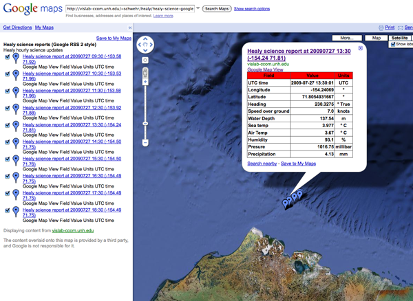
07.28.2009 14:01
UNH Newcastle Pier openhouse TODAY
Today at the new UNH pier, the Marine
Facility is hosting an Open House from 4:00 to 7:00. If you haven't
checked out the new setup out there, it's worth a visit.
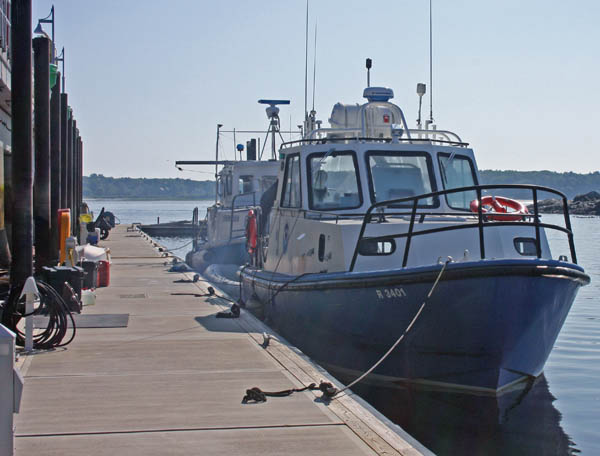
07.27.2009 16:46
Atom GeoRSS
With a little nudging from Sean
Gillies, I've created Atom GeoRSS feeds. I've done both the GML and
Simple styles. They both validate with Feed Validator:
Here is my GML atom feed with just one entry:
First, I really don't understand what an IRI is supposed to look like in the id field. I ended up copying what Sean did in his feed by making it "tab:domain_name,year:username:key". For the feed, I made the key be a unique string ("healysci") concatonated with the unix time. For an entry, I added an MD5 sum of the content. These IDs are unique, but are they right. The specification is not easy to follow.
Next question... if I have a Simple GeoRSS and a GML GeoRSS, should the IDs match or be different?
Now for the real question: Will it work in practice? My image feed for the Healy that has been running since April working in Google Maps:
http://maps.google.com/maps?q=http://vislab-ccom.unh.edu/~schwehr/healy/healy-aloftcon-latest.georss
Now if I try to put in the Atom feed, it tanks:
http://maps.google.com/maps?q=http://vislab-ccom.unh.edu/~schwehr/healy/feeds/healy-science-simple.atom
For starters, I was doing lon lat but Simple GeoRSS wants lat lon. I fixed that, but still no luck. So what is the typo in point?
<?xml version="1.0" encoding="utf-8"?>
<feed xmlns="http://www.w3.org/2005/Atom"
xmlns:georss="http://www.georss.org/georss"
xmlns:gml="http://www.opengis.net/gml"
xmlns:sy="http://purl.org/rss/1.0/modules/syndication/"
>
<sy:updatePeriod>hourly</sy:updatePeriod>
<sy:updateFrequency>1</sy:updateFrequency>
<title>Healy science reports (GML GeoRSS)</title>
<link href="http://vislab-ccom.unh.edu/%7Eschwehr/healy/healy-science-gml.atom"
type="application/atom+xml" rel="self"/>
<link href="http://vislab-ccom.unh.edu/%7Eschwehr/healy/"
type="text/html" rel="alternate"/>
<updated>2009-07-27T20:40:04Z</updated>
<author>
<name>Kurt Schwehr</name>
<uri>http://schwehr.org</uri>
<email>kurt@ccom.unh.edu</email>
</author>
<id>tag:vislab-ccom.unh.edu,2009:schwehr:healysci1248727204:healysci1248727204</id>
<entry>
<title>Healy science report at 20090727 18:30 (-154.49 71.75)</title>
<link href="http://vislab-ccom.unh.edu/%7Eschwehr/healy/" type="text/html" />
<id>tag:vislab-ccom.unh.edu,2009:schwehr:healysci1248727204:623bf15930753bd9a77880201d6a9c50</id>
<updated>2009-07-27T18:30:01Z</updated>
<summary>Hourly science report from a USCG Icebreaker</summary>
<georss:where>
<gml:Point>
<gml:pos>-154.4934505 71.7475196667</gml:pos>
</gml:Point>
</georss:where>
<content type="xhtml"><div xmlns="http://www.w3.org/1999/xhtml">
<table border="1">
<tr bgcolor="red"><th>Field</th> <th>Value</th> <th>Units</th> </tr>
<tr><th align="left">UTC time</th> <th align="right">2009-07-27 18:30:01</th> <th>UTC</th> </tr>
<tr><th align="left">Longitude</th> <th align="right">-154.4934505</th> <th>°</th> </tr>
<tr><th align="left">Latitude</th> <th align="right">71.7475196667</th> <th>°</th> </tr>
<tr><th align="left">Heading</th> <th align="right">148.0978</th> <th>° True</th> </tr>
<tr><th align="left">Speed over ground</th> <th align="right">0.6</th> <th>knots</th> </tr>
<tr><th align="left">Water Depth</th> <th align="right">104.64</th> <th>m</th></tr>
<tr><th align="left">Sea temp</th> <th align="right">3.809</th> <th>° C</th></tr>
<tr><th align="left">Air Temp</th> <th align="right">4.91</th> <th>° C</th></tr>
<tr><th align="left">Humidity</th> <th align="right">89.1</th> <th>%</th> </tr>
<tr><th align="left">Presure</th> <th align="right">1017.73</th> <th>millibar</th> </tr>
<tr><th align="left">Precipitation</th> <th align="right">4.13</th> <th>mm</th> </tr>
</table>
</div>
</content>
<rights>No claim is made to this data</rights>
</entry>
</feed>
And here is what I did for the Simple GeoRSS:
<?xml version="1.0" encoding="utf-8"?>
<feed xmlns="http://www.w3.org/2005/Atom"
xmlns:georss="http://www.georss.org/georss"
xmlns:gml="http://www.opengis.net/gml"
xmlns:sy="http://purl.org/rss/1.0/modules/syndication/"
>
<sy:updatePeriod>hourly</sy:updatePeriod>
<sy:updateFrequency>1</sy:updateFrequency>
<title>Healy science reports (Simple GeoRSS)</title>
<link href="http://vislab-ccom.unh.edu/%7Eschwehr/healy/healy-science-simple.atom"
type="application/atom+xml" rel="self"/>
<link href="http://vislab-ccom.unh.edu/%7Eschwehr/healy/"
type="text/html" rel="alternate"/>
<updated>2009-07-27T20:40:04Z</updated>
<author>
<name>Kurt Schwehr</name>
<uri>http://schwehr.org</uri>
<email>kurt@ccom.unh.edu</email>
</author>
<id>tag:vislab-ccom.unh.edu,2009:schwehr:healysci1248727204:healysci1248727204</id>
<entry>
<title>Healy science report at 20090727 18:30 (-154.49 71.75)</title>
<link href="http://vislab-ccom.unh.edu/%7Eschwehr/healy/" type="text/html" />
<id>tag:vislab-ccom.unh.edu,2009:schwehr:healysci1248727204:623bf15930753bd9a77880201d6a9c50simple</id>
<updated>2009-07-27T18:30:01Z</updated>
<summary>Hourly science report from a USCG Icebreaker</summary>
<georss:point>-154.4934505 71.7475196667</georss:point>
<content type="xhtml"><div xmlns="http://www.w3.org/1999/xhtml">
<table border="1">
<!-- table was here -->
</table>
</div>
</content>
<rights>No claim is made to this data</rights>
</entry>
</feed>
Sean was kind enough to take a look at what I did. He wondered
about the >div<, but concluded that the xhtml div is the
right way. So if validates, but is this the right answer? I don't
think so.First, I really don't understand what an IRI is supposed to look like in the id field. I ended up copying what Sean did in his feed by making it "tab:domain_name,year:username:key". For the feed, I made the key be a unique string ("healysci") concatonated with the unix time. For an entry, I added an MD5 sum of the content. These IDs are unique, but are they right. The specification is not easy to follow.
Next question... if I have a Simple GeoRSS and a GML GeoRSS, should the IDs match or be different?
Now for the real question: Will it work in practice? My image feed for the Healy that has been running since April working in Google Maps:
http://maps.google.com/maps?q=http://vislab-ccom.unh.edu/~schwehr/healy/healy-aloftcon-latest.georss
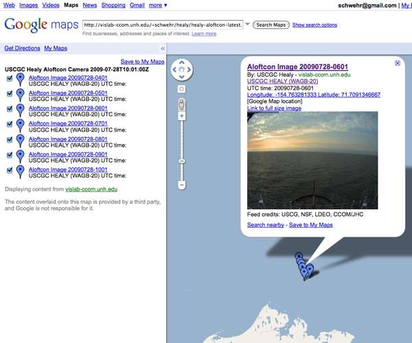
Now if I try to put in the Atom feed, it tanks:
http://maps.google.com/maps?q=http://vislab-ccom.unh.edu/~schwehr/healy/feeds/healy-science-simple.atom
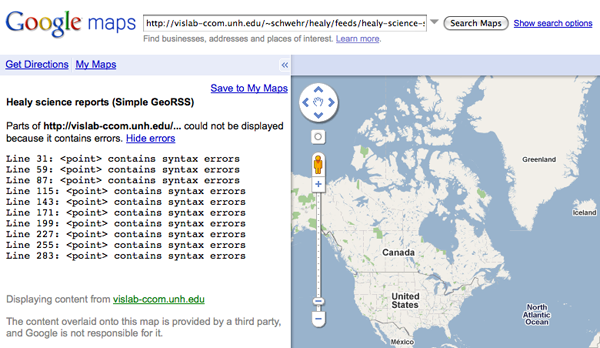
For starters, I was doing lon lat but Simple GeoRSS wants lat lon. I fixed that, but still no luck. So what is the typo in point?
07.26.2009 07:42
Healy GeoRSS in Google Maps
I'm in the process of trying to
rework how I create GeoRSS feeds.
My Healy feed does work in Google Maps, but it only seems to show the more recent entry... actually, this comes from the Healy's science systems being off while they are off of Barrow, AK today. The last update that I did built a feed that only had 1 image geocoded. Once the updater sees that there are no images available, it doesn't update the RSS any more.
http://maps.google.com/maps?q=http://vislab-ccom.unh.edu/~schwehr/healy/healy-aloftcon-latest.georss
Just because it renders in that case and I can watch the images go through NewNewsWire does not mean it is right.
After spending a day looking at RSS and GeoRSS, I have to say that the documentation for beginners out there is really not that good. It's fairly easy to mimic what I see around the web, but I just wanted to download the necessary schemas and validate them with xmllint or some such, but I keep getting turned around. What I get from http://www.georss.org/xml/1.1/georss.xsd is not an xsd schema, but an xsd schema wrapped in html. After I cut and paste from the web page to georss.xsd, I get this:
In googling around for help, I ran into this 2007 Google Blog article KML and GeoRSS Support Added to the Google Maps API. I figured I had another example to work from.
Here is the example that I was sent that contains the minimum fields need for feed to Google:
I did some tweaking and this appears to validate:
The actual file: sample.georss
Another example that others have refered to is over at SlashGeo
Validate http://slashgeo.org/index.rss, which is RSS 1.0.
Take a look at this post for more discussion on FeedValidator: Which Way Is Up [Sam Ruby]
And I should be reading: Really Simple Syndication Best Practices Profile.
Comments? Email me or comment on my LiveJournal post: What are the best practices for developing GeoRSS?
My Healy feed does work in Google Maps, but it only seems to show the more recent entry... actually, this comes from the Healy's science systems being off while they are off of Barrow, AK today. The last update that I did built a feed that only had 1 image geocoded. Once the updater sees that there are no images available, it doesn't update the RSS any more.
http://maps.google.com/maps?q=http://vislab-ccom.unh.edu/~schwehr/healy/healy-aloftcon-latest.georss
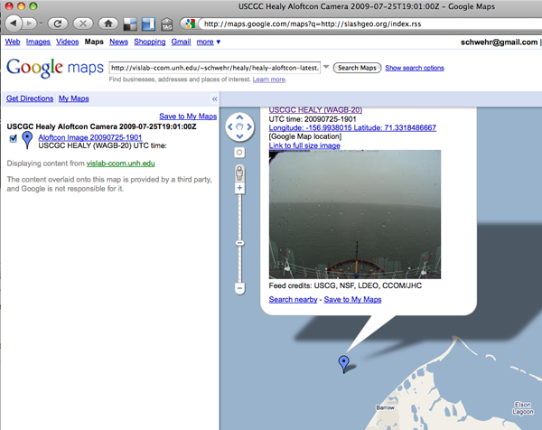
Just because it renders in that case and I can watch the images go through NewNewsWire does not mean it is right.
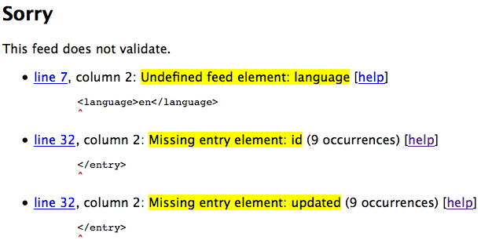
After spending a day looking at RSS and GeoRSS, I have to say that the documentation for beginners out there is really not that good. It's fairly easy to mimic what I see around the web, but I just wanted to download the necessary schemas and validate them with xmllint or some such, but I keep getting turned around. What I get from http://www.georss.org/xml/1.1/georss.xsd is not an xsd schema, but an xsd schema wrapped in html. After I cut and paste from the web page to georss.xsd, I get this:
% xmllint --noout --schema georss.xsd healy-aloftcon-latest.georss
warning: failed to load external entity "gmlgeorss11.xsd"
georss.xsd:9: element import: Schemas parser warning : Element '{http://www.w3.org/2001/XMLSchema}import': Failed to locate a schema at location 'gmlgeorss11.xsd'. Skipping the import.
Schemas parser error : element decl. '{http://www.georss.org/georss/10}_featureProperty', attribute 'substitutionGroup': The QName value '{http://www.opengis.net/gml}_Object' does not resolve to a(n) element declaration.
georss.xsd:32: element element: Schemas parser error : Element '{http://www.w3.org/2001/XMLSchema}element', attribute 'ref': The QName value '{http://www.opengis.net/gml}Point' does not resolve to a(n) element declaration.
georss.xsd:33: element element: Schemas parser error : Element '{http://www.w3.org/2001/XMLSchema}element', attribute 'ref': The QName value '{http://www.opengis.net/gml}LineString' does not resolve to a(n) element declaration.
georss.xsd:34: element element: Schemas parser error : Element '{http://www.w3.org/2001/XMLSchema}element', attribute 'ref': The QName value '{http://www.opengis.net/gml}Polygon' does not resolve to a(n) element declaration.
georss.xsd:35: element element: Schemas parser error : Element '{http://www.w3.org/2001/XMLSchema}element', attribute 'ref': The QName value '{http://www.opengis.net/gml}Envelope' does not resolve to a(n) element declaration.
georss.xsd:36: element element: Schemas parser error : Element '{http://www.w3.org/2001/XMLSchema}element', attribute 'ref': The QName value '{http://www.opengis.net/gml}CircleByCenterPoint' does not resolve to a(n) element declaration.
WXS schema georss.xsd failed to compile
This is not a good sign. It would be really helpful to know that I
am getting at least the struct right.In googling around for help, I ran into this 2007 Google Blog article KML and GeoRSS Support Added to the Google Maps API. I figured I had another example to work from.
Here is the example that I was sent that contains the minimum fields need for feed to Google:
<?xml version="1.0" encoding="UTF-8"?>
<rss version="2.0" xmlns:geo="http://www.w3.org/2003/01/geo/wgs84_pos#" xmlns:dc="http://purl.org/dc/elements/1.1/">
<!-- Some inline comments courtesy of cyber.law.harvard.edu/rss/rss.html -->
<channel>
<title>Your Expedition</title><!-- The name of the channel. It's how people refer to your service. -->
<link>www.your website.com</link><!--The URL to the HTML website corresponding to the channel. -->
<description>The latest news from the expedition</description><!-- Phrase or sentence describing the channel. -->
<item>
<title>Expedition Launch</title> <!-- The title of the item. -->
<link>http://findingcoral.blogspot.com</link> <!-- The URL of the item. -->
<guid></guid><!--canonical id of post, e.g. tag:blogger.com,1999:blog-9072888815061053156.post-2199967030233584065-->
<description>Some text here</description><!-- The item synopsis. -->
<dc:date>2009-06-08T10:01:39+00:00</dc:date> <!-- optional, dublin core publish date, more usable than rss standard pubDate -->
<pubDate>Monday, June 8, 2009 / 10:01pm PST</pubDate> <!-- Indicates when the item was published. -->
<geo:lat> 49.307940</geo:lat> <!-- lat of post -->
<geo:long>-123.080560</geo:long> <!-- lon of post -->
</item>
</channel>
</rss>
That would be RSS 2 and also looks to not validate.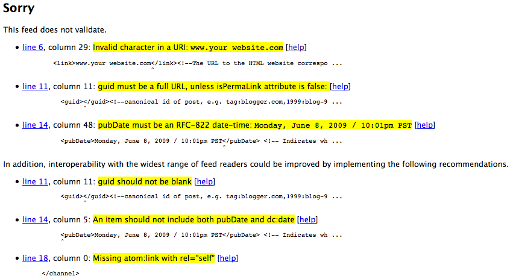
I did some tweaking and this appears to validate:
<?xml version="1.0" encoding="UTF-8"?>
<rss version="2.0" xmlns:geo="http://www.w3.org/2003/01/geo/wgs84_pos#" xmlns:dc="http://purl.org/dc/elements/1.1/">
<!-- Some inline comments courtesy of cyber.law.harvard.edu/rss/rss.html -->
<channel>
<title>Your Expedition</title><!-- The name of the channel. It's how people refer to your service. -->
<link>http://www.your-website.com</link><!--The URL to the HTML website corresponding to the channel. -->
<description>The latest news from the expedition</description><!-- Phrase or sentence describing the channel. -->
<item>
<title>Expedition Launch</title> <!-- The title of the item. -->
<link>http://findingcoral.blogspot.com</link> <!-- The URL of the item. -->
<guid>http://example.com/987654321</guid> <!-- Supposed to be a URL permalink --><!--canonical id of post, e.g. tag:blogger.com,1999:blog-9072888815061053156.post-2199967030233584065-->
<description>Some text here</description><!-- The item synopsis. -->
<dc:date>2009-06-08T10:01:39+00:00</dc:date> <!-- optional, dublin core publish date, more usable than rss standard pubDate -->
<pubDate>Mon, 08 Jun 2009 20:01:00 GMT</pubDate> <!-- Indicates when the item was published. -->
<geo:lat> 49.307940</geo:lat> <!-- lat of post -->
<geo:long>-123.080560</geo:long> <!-- lon of post -->
</item>
</channel>
</rss>
Passes with recommended changes:
Check
../attachments/2009-07/sample.georssThe actual file: sample.georss
Another example that others have refered to is over at SlashGeo
Validate http://slashgeo.org/index.rss, which is RSS 1.0.
<?xml version="1.0" encoding="ISO-8859-1"?> <rdf:RDF xmlns:rdf="http://www.w3.org/1999/02/22-rdf-syntax-ns#" xmlns="http://purl.org/rss/1.0/" xmlns:georss="http://www.georss.org/georss" xmlns:slash="http://purl.org/rss/1.0/modules/slash/" xmlns:taxo="http://purl.org/rss/1.0/modules/taxonomy/" xmlns:dc="http://purl.org/dc/elements/1.1/" xmlns:syn="http://purl.org/rss/1.0/modules/syndication/" xmlns:admin="http://webns.net/mvcb/" > ...Looks like I will just have to go for it and use the web validator for debugging.
Take a look at this post for more discussion on FeedValidator: Which Way Is Up [Sam Ruby]
And I should be reading: Really Simple Syndication Best Practices Profile.
Comments? Email me or comment on my LiveJournal post: What are the best practices for developing GeoRSS?
07.25.2009 08:54
Scripps Institution of Oceanography youtube channel
SIO has had a youtube channel for
quite a while. There are some interesting videos in there. Here is
a video of folks that I worked with while doing my PhD - The Salton
Sea:
07.24.2009 11:12
right whale notice chart demo
I greated this demo in Google Earth
back in September 2007, but somehow I never posted good screenshots
of it or the kmz.
ChartDemo-20070920.kmz
ChartDemo-20070920.kmz
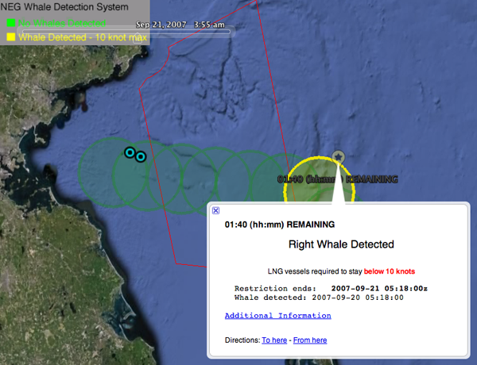
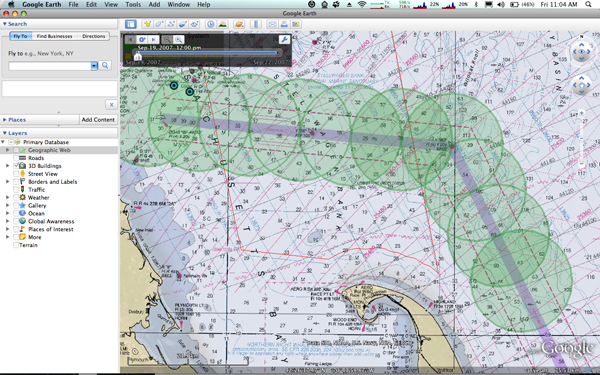
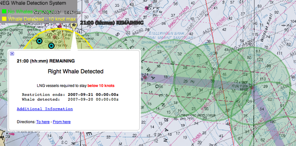
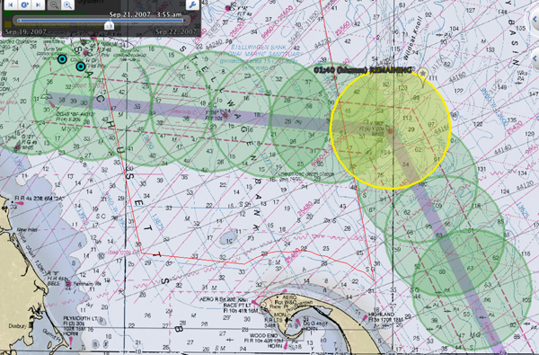
07.24.2009 10:20
Alternative to fink for installing django on the Mac
What work for one doesn't necessarily
work for others. I like being able to track what is out of date and
having one system that handles all updates, but it is good to hear
what other people prefer to use... e.g. fink and MacPorts sharing
info.
Install Django, GeoDjango, PostgreSQL and PostGIS on OSX Leopard [Simon Willison] points to:
Install Django, GeoDjango, PostgreSQL & PostGIS on OSX Leopard</> [tokumine.com]
Install Django, GeoDjango, PostgreSQL and PostGIS on OSX Leopard [Simon Willison] points to:
Install Django, GeoDjango, PostgreSQL & PostGIS on OSX Leopard</> [tokumine.com]
07.23.2009 10:58
Cosco Busan - John Cota gets jail time
Prison Sentence
For Cosco Busan Pilot
John Joseph Cota, the pilot who caused the Cosco Busan, a 900-ft long container ship, to collide with the San Francisco Bay Bridge and discharge approximately 53,000 gallons of oil into San Francisco Bay, was sentenced to serve 10 months in federal prison by U.S. District Court Judge Susan Illston for the Northern District of California, the Justice Department announced. ... Cota was sentenced according to an agreement in which he pleaded guilty to negligently causing discharge of a harmful quantity of oil in violation of the Clean Water Act (CWA), as amended by the Oil Spill Act of 1990 - a law passed in the wake of the 1989 Exxon Valdez disaster - and to violating the Migratory Bird Treaty Act, by causing the death of protected species of migratory birds. ...This will have big impacts on the Pilot community.
07.23.2009 08:36
Flowers in the back yard
Someone recently asked me if I didn't
like flowers. Here are some photos from the yard in last week to
show that I do indeed like flowers. I just tend to focus on the
vegetables and berries. I suppose I should try growing edible
flowers.
07.22.2009 17:34
ITDMA comm state for AIS Position Message 3
I've now added commstate to the
position messages. Note that in these examples, I'm still not
parsing ROT correctly.
First an ITDMA example with a msg type 3:
First an ITDMA example with a msg type 3:
% ais_msg_3_handcoded.py -d '!AIVDM,1,1,,B,35Mpib001:Jss`@H?5TTn3kP00mi,0*54'
position:
MessageID: 3
RepeatIndicator: 0
UserID: 366883240
NavigationStatus: 0
ROT: 0
SOG: 7.4
PositionAccuracy: 0
longitude: -70.7938
latitude: 42.35501667
COG: 124
TrueHeading: 121
TimeStamp: 48
RegionalReserved: 0
Spare: 0
RAIM: False
sync_state: 0
slot_increment: 215
slots_to_allocate: 0
keep_flag: 1
There are several cases of SOTDMA commstate, just like with the
basestation reports. Bot msg types 1 and 2 are SOTDMA.
% ais_msg_1_handcoded.py -d '!AIVDM,1,1,,B,14Rhln001iJtfCHGpQla>7@80H2t,0*37
MessageID: 1
... snip ...
sync_state: 0
slot_timeout: 6
received_stations: n/a
slot_number: 188
commstate_utc_hour: n/a
commstate_utc_min: n/a
commstate_utc_spare: n/a
slot_offset: n/a
And a final example with the hours and minutes:
ais_msg_1_handcoded.py -d '!AIVDM,1,1,,A,15MwqdOP04Js6:pH>OTtq?wP04KT,0*38'
MessageID: 1
... snip ...
sync_state: 0
slot_timeout: 1
received_stations: n/a
slot_number: n/a
commstate_utc_hour: 3
commstate_utc_min: 57
commstate_utc_spare: 0
slot_offset: n/a
07.22.2009 16:05
Byte boundaries for AIS messages
There has been discussion around the
assertion that AIS messages must pad to observe byte boundaries.
None of the people in the discussion who said this was true could
remember where they saw it. I just bumped into it: ITU-R M.1371-3,
Page 37, Annex 2, 3.3.7 Message structure:
Unused bits in the last byte should be set to zero in order to preserve byte boundary.This is right below discussion of NRZI coding and bit-stuffing. What is not clear is if this applies to the hardware level or this must be done at the message definition level. My read of this is that the message sent to the transceiver or basestation does NOT have to be byte aligned and that the padding should happen after bit-stuffing. But, I could be wrong.
07.22.2009 10:40
NMEA 4.0
I bit the bullet and purchsed the
NMEA 0183 Version 4.00 specification. I put down the $300 and they
took it. The website sent me a confirmation statement, but no email
of the document nothing about how to download it. Weird.
NMEA 0183, The Standard for Interfacing Marine Electronics. This standard defines electrical requirements, data transmission protocol and timing, and specific sentence formats for a 4800-baud serial data bus. For operation at the higher rate of 38,400-baud, refer to NMEA 0183-HS. Version 4.00 contains 59 new sentences, a new method for linking different sentence formats called TAG Block, and a new document format. For a complete network standard, refer to NMEA 2000.Update 28-July: Got my copy of the standard. Hopefully this will help me understand some of the strange corners of NMEA.
07.22.2009 07:28
UNH New England Center to close next year
This is really sad. The New England
Center was my first introduction to UNH when I first visited in May
of 2005. It's quite something to wake up to a view of the woods
from one of their hotel rooms. Since then, I have spent a good
amount of time at the conference center.
University officials announced Tuesday evening that the New England Center is closing on June 30, 2010, because of numerous economic factors. ... "We have been grappling with this decision for several years, reaching out to a wide array of industry experts and consultants and delaying the decision to close the center until it became absolutely unavoidable," Huddleston said. "We especially regret this because we have an incredibly hard-working and dedicated staff who have contributed to the distinction of the center." ... The university spends $2 million annually to subsidize the operation ...
07.21.2009 17:04
AIS commstate
I'm finally taking a look at the
communication state that comes along with AIS. I've hacked my
working version of noaadata to have a ais_msg_4_handcoded.py that
has hooks for the commstate. I have a helper that handles the
commstate stuff:
sotdma_fields = (
'syncstate',
'slottimeout',
'received_stations',
'slotnumber',
'commstate_utc_hour',
'commstate_utc_min',
'commstate_utc_spare',
'slotoffset'
)
def sotdma_sql_fields(c):
'sqlhelp fields for commstate'
for field in sotdma_fields:
c.addInt(field)
def sotdma_parse_bits(bv):
assert(len(bv)==19)
r = {}
r['syncstate'] = int(bv[:2])
r['slottimeout'] = slottimeout = int(bv[2:5])
submessage = bv[-14:]
if slottimeout in (3,5,7):
r['received_stations'] = int(submessage)
elif slottimeout in (2,4,6):
r['slotnumber'] = int(submessage)
elif slottimeout == 1:
r['commstate_utc_hour'] = int(submessage[0:5])
r['commstate_utc_min'] = int(submessage[5:12])
r['commstate_utc_spare'] = int(submessage[-2:])
elif slottimeout == 0:
r['slotoffset'] = int(submessage)
else:
assert False
return r
Of course, theis is research, so I'm not starting where you would
expect. This is the AIS Basestation SOTDMA that I'm looking at.
Here are some decoded messages to give a feel for how things look:
% ./ais_msg_4_handcoded.py -d '!AIVDM,1,1,,A,4h3OvjAuUrGsqo=cf0Knevo00l3a,0*4C'
bsreport:
MessageID: 4
RepeatIndicator: 3
UserID: 3669705
Time_year: 2009
Time_month: 7
Time_day: 20
Time_hour: 23
Time_min: 59
Time_sec: 57
PositionAccuracy: 1
Position_longitude: -122.84
Position_latitude: 48.6800983
fixtype: 7
Spare: 0
RAIM: False
syncstate: 1
slottimeout: 5
received_stations: 233
slotnumber: n/a
commstate_utc_hour: n/a
commstate_utc_min: n/a
commstate_utc_spare: n/a
slotoffset: n/a
And one with the slottimeout of 1, which is the time report:
% ./ais_msg_4_handcoded.py -d '!AIVDM,1,1,,A,403OwlAuUr000mPN<`RsuT700T00,0*2A'
bsreport:
MessageID: 4
RepeatIndicator: 0
UserID: 3669969
Time_year: 2009
Time_month: 7
Time_day: 20
Time_hour: 0
Time_min: 0
Time_sec: 0
PositionAccuracy: 1
Position_longitude: -146.69756667
Position_latitude: 61.0566666667
fixtype: 7
Spare: 0
RAIM: False
syncstate: 1
slottimeout: 1
received_stations: n/a
slotnumber: n/a
commstate_utc_hour: 0
commstate_utc_min: 0
commstate_utc_spare: 0
slotoffset: n/a
And a slottimeout of 4, for slot number:
% ./ais_msg_4_handcoded.py -d '!AIVDM,1,1,,B,4030p81uUrP0OG;V8hKtT8A00@C5,0*78,b003669703,1248134432'
bsreport:
... snip ...
syncstate: 0
slottimeout: 4
received_stations: n/a
slotnumber: 1221
commstate_utc_hour: n/a
commstate_utc_min: n/a
commstate_utc_spare: n/a
slotoffset: n/a
Of course, this work points out how badly I need to rewrite the
whole way I handle AIS messages (and not just for the speed
improvements).07.21.2009 10:50
Neptune LNG construction
These photos taken from the Neptune
LNG port constuction are amazing. This is the gear that will get
LNG to the New England area without going near Boston. Note the
person on top of the STL port in the 3rd image. Photo credit: USCG.
Neptune LNG LLC [Suez]
The U.S. Coast Guard has issued a broadcast advising mariners to use caution while transiting in the area until permanent safety/security zone is in place. The Notice to Proposed Rulemaking to establish this "Area to be Avoided" will be published shortly in the Federal Register allowing for a 60-day public comment period. BNM - 17JUL09: "CCGD1 BNM BOS-342-09-MA-MASSACHUSETTS BAY-DUE TO LARGE UNCHARTED UNDERWATER OBJECTS ASSOCIATED WITH THE NEPTUNE LIQUIFIED NATURAL GAS DEEPWATER PORT, MARINERS ARE ADVISED TO USE CAUTION WHEN TRANSITING, FISHING OR CONDUCTING ANY UNDERWATER OPERATIONS WITHIN A 1200 YARD RADIUS OF THE FOLLOWING POSITIONS: POSITION ONE IS (PA) 42DEG29'12"N, 070DEG36'29"W. POSITION TWO IS (PA) 42DEG 27'20"N, 070DEG36'7"W. UNQUOTE."
Neptune LNG LLC [Suez]
07.21.2009 09:27
Data entry for emergencies
Many of us have been looking at the
Andoid and iPhone as the obvious platform for these kinds of
devices. Custom devices are fine and they are often more rugged,
but getting more and cheaper devices out there requires looking at
consumer devices. Plus you then have multiple data links built in
(cellular [3-9]G, wifi, bluetooth, etc).
In Portsmouth: New hand-held device helps Red Cross quickly gather, send data in emergencies
In Portsmouth: New hand-held device helps Red Cross quickly gather, send data in emergencies
.. On Monday a group of Red Cross disaster team leaders from all over the country gathered at Global Relief Technologies (GRT) in Pease International Tradeport to continue training on portable "Rapid Data Management System" units that are being used to track damage following emergencies such as hurricanes and floods. ...And: NOAA Administrator Cites Offshore LNG Projects as One Reason for Addressing Marine Spatial Planning Issues [LNG Law Blog]
07.21.2009 08:56
The new NOAA key phrase - "Marine Spatial Planning"
Lubchenco, the new NOAA
administrator, has caused a big flurry around the phrase "Marine
spatial planning." I head this phrase a good number of times in the
last month and today it's in The Boston Globe:
NOAA chief says new ocean uses creating conflicts
... "Marine spatial planning" refers to the process of determining which kind of activity should be allowed in which parts of the oceans, including which portions of the oceans should have single or multiple uses, while still protecting fragile marine ecosystems. Lubchenco said better planning, with the help of extensive public hearing and comment, could help minimize conflicts in the future, particularly as developers seek to place wind farms or tidal energy projects in deeper waters farther from shore. ...A Google Search of Marine Spatial Planning (MSP) at NOAA only has 211 hits so far, but I'm sure that will be increasing over the next few months.
07.20.2009 20:53
N-AIS Newsletters
I've been around the NAIS folks quite
a bit, but never new they had a news letter until just now. I can't
seem to find the main link for all the editions. Best I can find is
NAIS
newsroom
NAIS-Newsletter-Issue1-3QFY07.pdf
The-Guardian-Issue-2.pdf
From the October 2007 issue:
[PDF] Schwehr, K.D., McGillivary, P.A., Marine Ship Automatic Identification System (AIS) for Enhanced Coastal Security Capabilities: An Oil Spill Tracking Application, Oceans07 MTS/IEEE, Vancouver, B.C. 29 Sept - 4 Oct 2007.
NAIS-Newsletter-Issue1-3QFY07.pdf
The-Guardian-Issue-2.pdf
From the October 2007 issue:
On August 30th, a medium sized oil spill impacted the southwest shorelines of Puerto Rico, affecting approximately 40 miles of coastline considered a highly sensitive ecologica environmental system for flora and fauna. The spill could potentially result in an adverse impact to the local environment and ecosystem. In addition to threatening coral reefs and mangroves, both of which support many aquatic species, the oil spill could cause harm to the Guanica Dry Forest. The Guanica Dry Forest is a biosphere reserve of 10,000 acres that is home to 48 endangered species and 16 species unique to Puerto Rico. NAIS records were of paramount importance to identify vessels that transited the offshore area in the days leading up to the discovery of the oil. Coast Guard officials were able to replay the NAIS logs and watch the vessels transiting the area, identifying potential sources of the spill. Narrowing down to a manageable group of possible vessels derived from the NAIS data, Coast Guard officials were able to identify potential sources of the spill in order to conduct "oil fingerprinting" tests that will compare the spilled oil with the oil on each potential source to find a match. With any case in which oil is discovered, finding the responsible party allows the government to seek recovery costs for cleanup efforts, as well as the costs of economic and environmental losses. Associated cost with similar clean up efforts could reach several million dollars, therefore, it is of paramount importance to identify any potential sources transiting the affected area. The early identification process could allow the appropriate governmental entity to recoup expenses related to the oil spill response, which alone could potentially recover much of the investment for I-1 of NAIS. optimize the management of a $27 billion investment portfolio. This investment portfolio supports the Coast Guard's core missions of maritime safety, security and stewardship.We wrote about this about the same time:
[PDF] Schwehr, K.D., McGillivary, P.A., Marine Ship Automatic Identification System (AIS) for Enhanced Coastal Security Capabilities: An Oil Spill Tracking Application, Oceans07 MTS/IEEE, Vancouver, B.C. 29 Sept - 4 Oct 2007.
07.20.2009 11:46
GMT 4.5.0 and mbsystem on fink
Remko sent me updated info files for
GMT 4.5.0 fink on Mac OSX. They are now committed, so if you update
fink you will get the latest version. There were API changes in
GMT's libraries, so I had to patch MBSystem for the
GMT_grd_setregion and ps_line functions:
As of today, I've removed mbsystem from fink for mac osx 10.4. I've got no way to support it. If you want the old info file, I've archived it here:
http://vislab-ccom.unh.edu/~schwehr/software/fink/mbsystem-10.4.info
perl -pi.bak -e 's|GMT_grd_setregion \(\&header, xmin, xmax, ymin, ymax\)\;|GMT_grd_setregion \(\&header, xmin, xmax, ymin, ymax, BCR_BILINEAR\)\;|g' ./src/mbaux/mb_readgrd.c ./src/mbview/mbgrdviz_callbacks.c perl -pi.bak -e 's|GMT_grd_setregion \(\&header, \&bounds\[0\], \&bounds\[1\], \&bounds\[2\], &bounds\[3\]\)\;|GMT_grd_setregion \(\&header, \&bounds\[0\], \&bounds\[1\], \&bounds\[2\], &bounds\[3\], BCR_BILINEAR\)\;|g' src/gmt/mbgrdtiff.c perl -pi.bak -e 's|ps_line\(xl,yl,4,3,0,0\)\;|ps_line\(xl,yl,4,3,0\)\;|g' src/utilities/mbps.cIMPORTANT for Mac OSX 10.4 users:
As of today, I've removed mbsystem from fink for mac osx 10.4. I've got no way to support it. If you want the old info file, I've archived it here:
http://vislab-ccom.unh.edu/~schwehr/software/fink/mbsystem-10.4.info
07.18.2009 09:28
iPhone camera application that records the compass?
Dear Lazyweb,
There has to be an app or setting to capture images with the GPS and the compass, right? I haven't found one yet. If you know of what, let me know here as a comment:
photos with compass?
There has to be an app or setting to capture images with the GPS and the compass, right? I haven't found one yet. If you know of what, let me know here as a comment:
photos with compass?
07.17.2009 17:00
commas in vessel names
I think this is in the catagory of
NOT best practices. Comma's in ship names is probably not what
people should be doing. I would think that the name should be what
you expect to hear over the radio. Best to make things simple so
they can be read directly off of a screen without thought in an
emergency.
SELECT userid,name FROM shipdata WHERE name LIKE "%,%" GROUP BY userid,name; 259898000|KRISTIN,KNUTSEN@@@@@ 533678000|ALAM,BISTARI@@@@@@@@ 832564536|>+,<+!+7;96N,(&7 /\- 1037329966|79O76`DJI,E-!H+D89>*Gotta love those last two, which I'm sure are bad packets. Hopefully that isn't what some transceiver has for a name.
07.17.2009 15:44
SQL repetitions
I was trying to list ships where I
have more than one report (aka drop singletons). Les found this in
the MySQL Cookbook:
SELECT COUNT(*) AS repetitions, last_name, first_name\ FROM catalog_list GROUP BY last_name, first_name HAVING repetitions > 1;Jason confirmed that for MySQL that does indeed work. SQLite - not so much. This did get me close and here is my final query. I do wish I could name the HAVING expression.
SELECT COUNT(userid),userid
FROM position
GROUP BY userid
HAVING COUNT(userid) > 1;
This is the first time I've used HAVING. It's basically WHERE, but
for handling groups. I can then sort by the count:
SELECT * FROM (
SELECT count(userid) as cnt,userid
FROM position
GROUP BY userid
) ORDER BY cnt LIMIT 10;
07.17.2009 14:51
SedLog
This might be an alternative to the
full blown RockWare RockWorks
suite... SedLog. I wrote
X-Core for my thesis, but it would have been nice to have while I
spent many many days working on my cores.
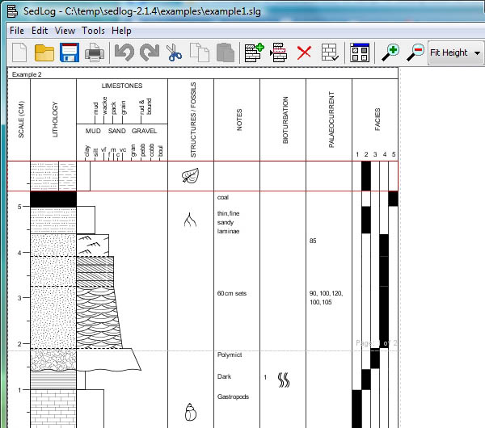
07.16.2009 07:10
Pavilion Lake exploration
Check out what the folks working at
Pavilion Lake
(blog) have been working on!
They've got 4D bathy - The robots are coming... living in a visually stimulating world
Matt Deans has been working on a scientists notebook as a part of the "Surface Data System": Tracking submarines on the go!
They've got 4D bathy - The robots are coming... living in a visually stimulating world
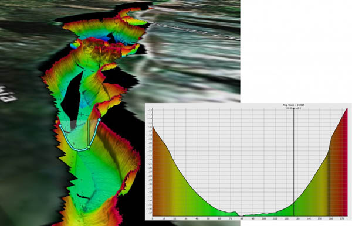
Matt Deans has been working on a scientists notebook as a part of the "Surface Data System": Tracking submarines on the go!
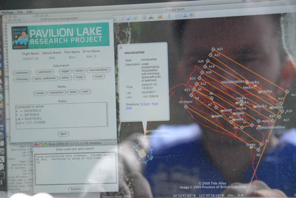
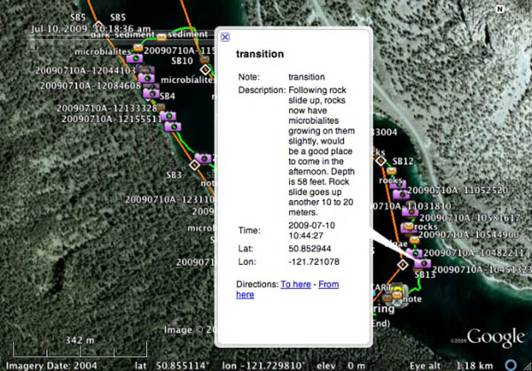
07.16.2009 06:38
Fisherman get sidescan
What's old is new.
SturctureScan looks like standard sidescan. The real questions
are: 1) How does this compare with the commercial survey sidescans?
and 2) Will this log the sonars to a standard file format?
Found via Panbo: Lowrance demos StructureScan, with "DownScan"
Found via Panbo: Lowrance demos StructureScan, with "DownScan"
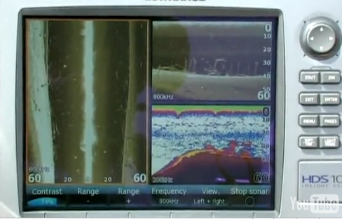
07.15.2009 14:50
Augmented reality iphone hype
So, I don't know why this app
includes video, but there is definite buzz around about the
possibilities for new applications with the iPhone 3GS...
Appiphilia: Augmented reality iPhone apps for finding subways and
Twitter neighbors [LA Times Technology section]
Thanks to Eric M. for pointing me to this via digg. (BTW, I still don't totally get digg.)
Thanks to Eric M. for pointing me to this via digg. (BTW, I still don't totally get digg.)
07.15.2009 09:09
Cover of Environmental Management
I just found out that one of my
papers made the cover of the journal it was published in. This is
what I get for living mostly in the digital versions of journals.
Thanks to Mike and Leila, I now have a copy of the cover.
[PDF] Hatch, L., C. Clark, R. Merrick, S. Van Parijs, D. Ponirakis, K. Schwehr, M. Thompson, D. Wiley, Characterizing the Relative Contributions of Large Vessels to Total Ocean Noise Fields: A Case Study Using the Gerry E. Studds Stellwagen Bank National Marine Sanctuary, Environmental Management, 42(5), 735-52, Nov 2008.
See also (with color figures): Passive Acoustic Monitoring - Noise Budgets [NOAA SBNMS]
[PDF] Hatch, L., C. Clark, R. Merrick, S. Van Parijs, D. Ponirakis, K. Schwehr, M. Thompson, D. Wiley, Characterizing the Relative Contributions of Large Vessels to Total Ocean Noise Fields: A Case Study Using the Gerry E. Studds Stellwagen Bank National Marine Sanctuary, Environmental Management, 42(5), 735-52, Nov 2008.
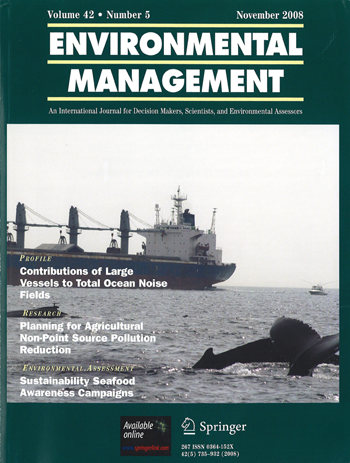
See also (with color figures): Passive Acoustic Monitoring - Noise Budgets [NOAA SBNMS]
07.14.2009 13:27
Air gap sensor
NOAA's
Air Gap Technology Sends USS New York Down the Mississippi River
for Sea Trials
Thanks to Cresent for the link.
NOAA's "air gap" technology received the ultimate test on the morning of June 27. The technology passed with flying colors as the new U.S. Navy LPD ship, the USS New York, sailed down the Mississippi River, clearing the underside of the Huey P. Long Bridge just north of downtown New Orleans by 64 centimeters (2.1 feet). The San Antonio-class $1 billion naval vessel, built in part from steel salvaged from the World Trade Center towers, sailed downriver, heading out for a month of sea trials. ...I really want to use air gap sensors to validate the AIS length and draught settings (if you know the keel to max height/profile of a ship)... but there are no bridges in the areas that I've been working.
Thanks to Cresent for the link.
07.13.2009 14:05
Core description sheets
I realized that I never posted a
sample of what I used for a core description sheet during my
thesis. If I did this over, I would like something with more
flexibity. I thought I had some description sheets that also showed
XRays, but time rots archives.
core-description-sheet.png - larger
core-description-sheet.png - larger

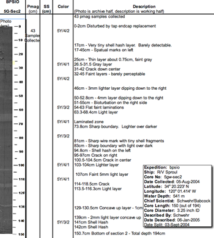
07.13.2009 12:41
SonarWiz training and test data collection
Last week we did a short training
session on SonarWiz. We
did a little practice with subbottom:
It's pretty awesome that SonarWiz will directly make Fledermaus sd files of subbottom lines.
But the primary focus is on sidescan. We used a Klein towfish for a short while to collect some data for training. Be warned that we were messing a lot with the settings, not running survey lines, and spent little time fine tuning the depth detection, so this data is fairly rough.
Working with sidescan in SonarWiz:
I put online a sample of the target designation report output:
2009-July-10_test_survey
SonarWiz has an initial KML / Google Earth writer, but for better quality, I exported a nice GeoTiff and used ImageViewer in Fledermaus 6 to created a tiled KMZ. Fledermaus 7 should do this soon, but ImageViewer was folded into DMagic.
20090710-newcastle-sidescan.kmz
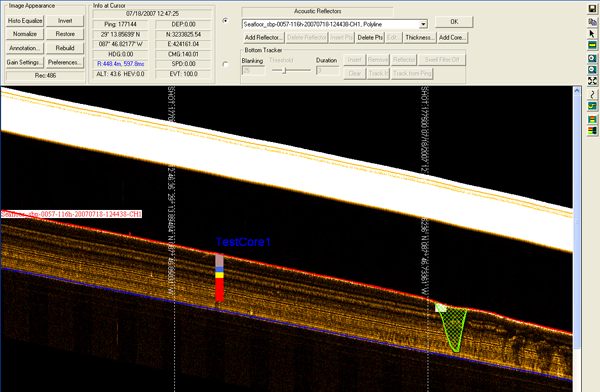
It's pretty awesome that SonarWiz will directly make Fledermaus sd files of subbottom lines.
But the primary focus is on sidescan. We used a Klein towfish for a short while to collect some data for training. Be warned that we were messing a lot with the settings, not running survey lines, and spent little time fine tuning the depth detection, so this data is fairly rough.
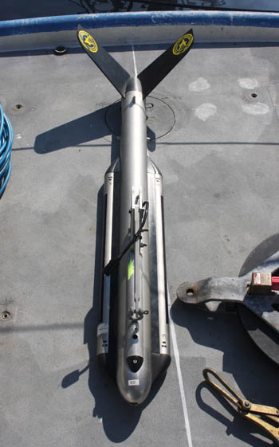
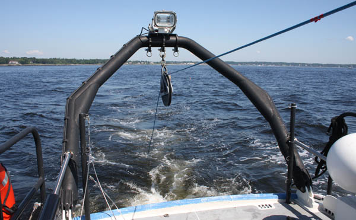
Working with sidescan in SonarWiz:
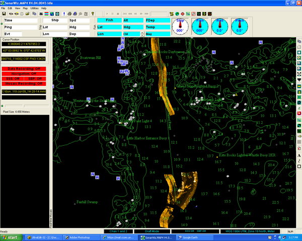
I put online a sample of the target designation report output:
2009-July-10_test_survey
SonarWiz has an initial KML / Google Earth writer, but for better quality, I exported a nice GeoTiff and used ImageViewer in Fledermaus 6 to created a tiled KMZ. Fledermaus 7 should do this soon, but ImageViewer was folded into DMagic.
20090710-newcastle-sidescan.kmz
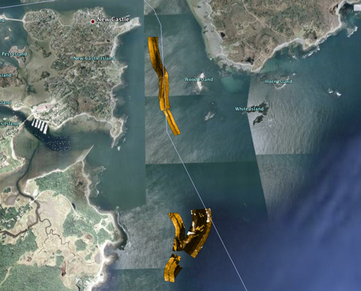
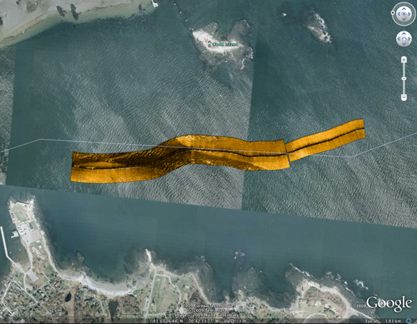
07.13.2009 12:20
National Geographic on Whale Tagging
CCOM's whale tagging efforts on
National Geographic:
David Wiley and Colin Ware on the NOAA ship Nancy Foster:
Whales Tagged to Prevent Collisions June 18, 2009 - In busy waters off Massachusetts, researchers are hand-tagging humpback whales to learn how to protect the species from potentially lethal collisions with ships.
David Wiley and Colin Ware on the NOAA ship Nancy Foster:
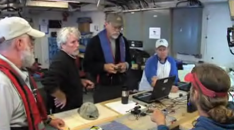
07.13.2009 09:50
ocean explorer - not the office of exploration and research
In my web page comparison last week,
I compared http://explore.noaa.gov to http://jpl.nasa.gov. Turns out that is
the Office of Exploration and Research and what I should have been
looking at http://oceanexplorer.noaa.gov/
which is a lot better. The difference being that I put NOAA in my
search last week. Ocean Explorer is a much more interesting web
site, but why are there two and what is the difference? This other
page has links to YouTube, Twitter and more, but isn't well
organized nor why would I know to go to that web page? Is it linked
from http://noaa.gov? NOAA should
definitely put some energy into making it obvious what cool things
different parts of NOAA are up to!
Clicking on the RSS feeds shows that there is lots there, but yikes... too much text.
The page could use some images of people doing exciting things like surveying 3D bathymetry (yeah, I'm biased), driving survey lauches, working on shorelines, examing the criters that they have collected, dredging the depths, driving AUVs and ROVs, etc. Those are the things that I get to see while working with NOAA that the public should get to see right off.
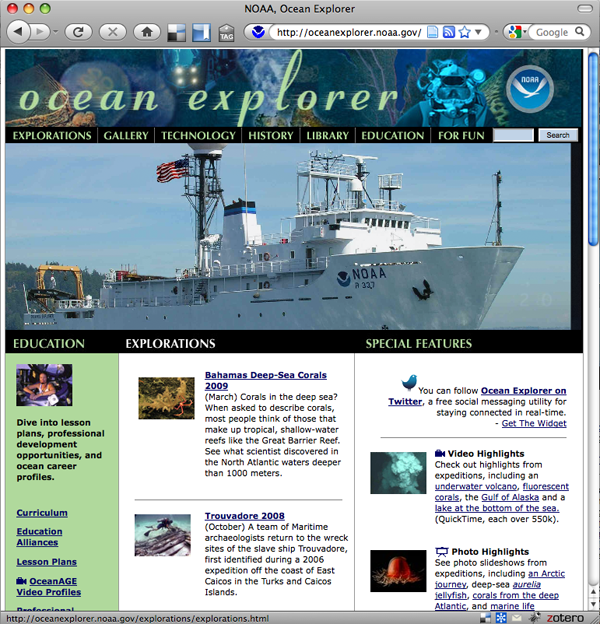
Clicking on the RSS feeds shows that there is lots there, but yikes... too much text.
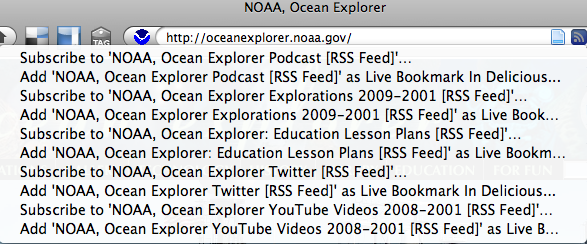
The page could use some images of people doing exciting things like surveying 3D bathymetry (yeah, I'm biased), driving survey lauches, working on shorelines, examing the criters that they have collected, dredging the depths, driving AUVs and ROVs, etc. Those are the things that I get to see while working with NOAA that the public should get to see right off.
07.13.2009 03:53
Congressional Report on the Law of the Seas Convention
U.N. Convention on the Law of
the Sea: Living Resources Provisions [OpenCRS RL32185]
The United Nations Convention on the Law of the Sea (LOS Convention) was agreed to in 1982, but the United States never became a signatory nation. The Senate Committee on Foreign Relations reported the LOS Convention on December 19, 2007. The Senate may choose to address the ambiguities of the LOS Convention with its power to make declarations and statements as provided for in Article 310 of the LOS Convention. Such declarations and statements can be useful in promulgating U.S. policy and putting other nations on notice of U.S. interpretation of the LOS Convention. In the 111th Congress, Secretary of State Hillary Clinton, at her confirmation hearing before the Senate Committee on Foreign Affairs on January 13, 2009, acknowledged that U.S. accession to the LOS Convention would be an Obama Administration priority. Later in this confirmation hearing, Senator John Kerry, the committee chair, confirmed that the LOS Convention would also be a committee priority. A possible benefit of U.S. ratification would be the international communitys anticipated positive response to such U.S. action. In addition, early U.S. participation in the development of policies and practices of the International Tribunal for the Law of the Sea, the Commission on the Limits of the Continental Shelf, and the International Seabed Authority could help to forestall future problems related to living marine resources. On the other hand, some U.S. interests view U.S. ratification as potentially complicating enforcement of domestic marine regulations, and remain concerned that the LOS Conventions language concerning arbitrary refusal of access to surplus (unallocated) living resources might be a potential source of conflict (in addition to concerns about other provisions of the Convention). These uncertainties reflect the absence of any comprehensive assessment of the social and economic impacts of LOS implementation by the United States. This report describes provisions of the LOS Convention relating to living marine resources and discusses how these provisions comport with current U.S. marine policy. As presently understood and interpreted, these provisions generally appear to reflect current U.S. policy with respect to living marine resource management, conservation, and exploitation. Based on these interpretations, they are generally not seen as imposing significant new U.S. obligations, commitments, or encumbrances, while providing several new privileges, primarily related to participation in commissions developing international ocean policy. No new domestic legislation appears to be required to implement the living resources provisions of the LOS Convention.
07.09.2009 07:59
Area Notice implementation - Volpe TV32
I have the first screenshot from the
implemenation efforts of the Area Notice. Dave from the Volpe
Center sent me this screenshot from TV32 showing the sector
shape.
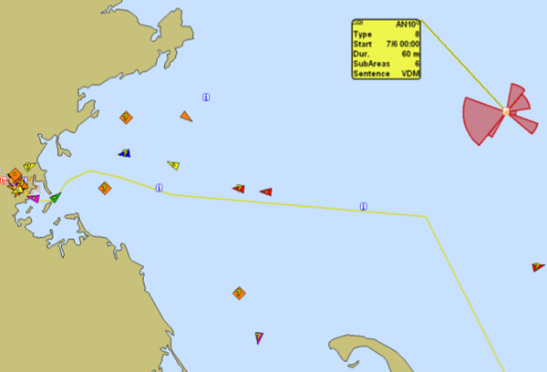
07.09.2009 07:28
Tools in python that I don't yet use
virtualenv and Fabric work very
differently than I'm used to. Perhaps I need to rethink my
strategy? I use dep or rpm installs of software to provide software
for projects and have stayed far away from automatic installs by
easy_install. How can I track what I've installed and how to I
uninstall with easy_install? It sounds like the key thing is to
work in a virtualenv and just start over from scratch every
time.
Tools of the Modern Python Hacker: Virtualenv, Fabric and Pip
Tools of the Modern Python Hacker: Virtualenv, Fabric and Pip
07.08.2009 15:59
Goverment center homepage bake-off
I was just challenged to go to the
NOAA Ocean Exploration to see how NOAA is communicating how cool it
is to work with the oceans. So let's see what we've got.
To be fair, I'll compare it to a NASA Center and I'll pick JPL here since it is not as big as the human exploration components of NASA. First the two home pages, starting with Ocean Exploration:
http://explore.noaa.gov/
Next take a look at http://jpl.nasa.gov/
The fist things I noticed about the OE page are that there are no obvious movies and very little of the page links to other content. The JPL page has 4 obvious movies, lots of news articles, and most of the page contains links to topics. If you drill into the OE page, it takes a while to get images and movies of what these things are. I have to say that the JPL site scores high on the wow page, where as the OE is okay, but doesn't communicate how exciting ocean exploration. The JPL site has blogs, podcasts, facebook, twitter, YouTube, and iTunes streams.
This disparity is a bummer. I've worked both with space exploration and ocean exploration. I love my work with spacecraft, but ocean exploration is just as exciting in terms of topics and getting out and exploring the oceans is much more intense than spacecraft on a day-to-day basis. We run more "missions" here at CCOM in a year than NASA does, more of us get to be the lead scientist, and I really feel like I'm an astronaut when I'm out at sea on a ship doing research.
With ocean exploration, you get to see volcanoes erupt, discover strange sea floor vents with columns of gas that tower thousands of feet, try to decipher the history of recent landslides underwater, meet strange sea creatures, map unexplored parts of our planet, and touch materials you collect from places that people have never been.
Just check out this video (I just wish there was some narration):
I love both space and ocean exploration - I do both. It just seems that the ocean exploration crowd could share a little bit more of the experience. I'm not talking Bob Ballard style here... the day to day business of ocean exploration is just down right FUN!
Trackback: Maritime Monday 170 [gCaptain.com]
To be fair, I'll compare it to a NASA Center and I'll pick JPL here since it is not as big as the human exploration components of NASA. First the two home pages, starting with Ocean Exploration:
http://explore.noaa.gov/
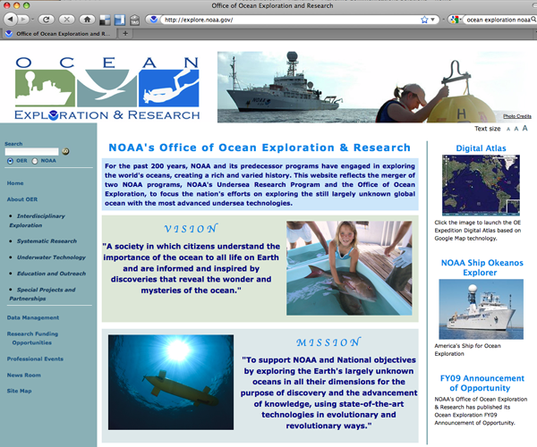
Next take a look at http://jpl.nasa.gov/
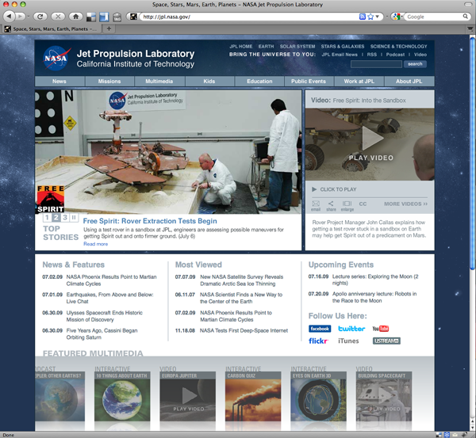
The fist things I noticed about the OE page are that there are no obvious movies and very little of the page links to other content. The JPL page has 4 obvious movies, lots of news articles, and most of the page contains links to topics. If you drill into the OE page, it takes a while to get images and movies of what these things are. I have to say that the JPL site scores high on the wow page, where as the OE is okay, but doesn't communicate how exciting ocean exploration. The JPL site has blogs, podcasts, facebook, twitter, YouTube, and iTunes streams.
This disparity is a bummer. I've worked both with space exploration and ocean exploration. I love my work with spacecraft, but ocean exploration is just as exciting in terms of topics and getting out and exploring the oceans is much more intense than spacecraft on a day-to-day basis. We run more "missions" here at CCOM in a year than NASA does, more of us get to be the lead scientist, and I really feel like I'm an astronaut when I'm out at sea on a ship doing research.
With ocean exploration, you get to see volcanoes erupt, discover strange sea floor vents with columns of gas that tower thousands of feet, try to decipher the history of recent landslides underwater, meet strange sea creatures, map unexplored parts of our planet, and touch materials you collect from places that people have never been.
Just check out this video (I just wish there was some narration):
I love both space and ocean exploration - I do both. It just seems that the ocean exploration crowd could share a little bit more of the experience. I'm not talking Bob Ballard style here... the day to day business of ocean exploration is just down right FUN!
Trackback: Maritime Monday 170 [gCaptain.com]
07.08.2009 11:15
Healy in Google Earth - Instrument reports
The USCGC ice breaker Healy is
underway again and being shown in my Google Earth visualization.
You can get it from my site or from
the USCG Environmental Layer:
Google Earth Outreach Showcase - U.S. Coast Guard Environmental Stewardship Efforts [earth.google.com]
I've also now released the visualization of the instrument reports: healy-instrument-reports.kml. This visualization is a collaboration with Dale and his LDEO team. I don't yet have it automatically updating.
Note that there isn't a lot of science data yet for this cruise. Take a look at the transit south for reports with complete science data.
Google Earth Outreach Showcase - U.S. Coast Guard Environmental Stewardship Efforts [earth.google.com]
I've also now released the visualization of the instrument reports: healy-instrument-reports.kml. This visualization is a collaboration with Dale and his LDEO team. I don't yet have it automatically updating.
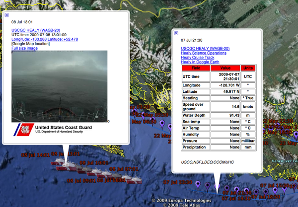
Note that there isn't a lot of science data yet for this cruise. Take a look at the transit south for reports with complete science data.
07.07.2009 11:06
AUV and Buoys marked with AIS Area Notice Messages
Now that I have the reference
implementation out, it's time to show off what kinds of things you
can do with this. If you have the position of an AUV and the
support acoustic buoys, you can send out realtime notices. This is
exactly the case we had with Mendum's Pond last month. This is a
collaboration between myself, Val Schmidt, Art Trembanis, and Tom
Weber.
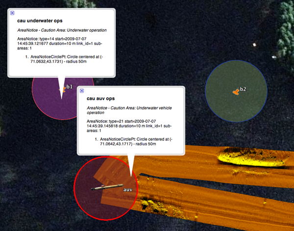
07.07.2009 08:35
Stereoscope view of Norfolk ship based lidar
Yesterday, Roland got GeoZui working
on the stereoscope and he converted a point cloud of Norfolk, VA
from a ship based lidar. I finally remembered to grab a camera
while the stereoscope is in use!
07.07.2009 03:54
Congressional Report on GIS
Geospatial Information and
Geographic Information Systems (GIS): Current Issues and Future
Challenges [OpenCRS]
Geospatial information is data referenced to a placea set of geographic coordinates which can often be gathered, manipulated, and displayed in real time. A Geographic Information System (GIS) is a computer system capable of capturing, storing, analyzing, and displaying geographically referenced information. In recent years consumer demand has skyrocketed for geospatial information and for tools like GIS to manipulate and display geospatial information. Global Positioning System (GPS) data and their integration with digital maps has led to the popular handheld or dashboard navigation devices used daily by millions. The federal government and policy makers increasingly use geospatial information and tools like GIS for producing floodplain maps, conducting the Census, mapping foreclosures, and responding to natural hazards such as wildfires and hurricanes. For policy makers, this type of analysis can greatly assist in clarifying complex problems that may involve local, state, and federal government, and affect businesses, residential areas, and federal installations. Congress has recognized the challenge of coordinating and sharing geospatial data from the local, county, and state level to the national level, and vice versa. The cost of geospatial information to the federal government has also been an ongoing concern. As much as 80% to 90% of government information has a geospatial component, according to different sources. The federal governments role has changed from being a primary provider of authoritative geospatial information to coordinating and managing geospatial data and facilitating partnerships. Challenges to coordinating how geospatial data are acquired and usedcollecting duplicative data sets, for exampleat the local, state, and federal levels, in collaboration with the private sector, are not yet resolved. The federal government has recognized the need to organize and coordinate the collection and management of geospatial data since at least 1990, when the Office of Management and Budget (OMB) revised Circular A-16 to establish the Federal Geographic Data Committee (FGDC) and to promote the coordinated use, sharing, and dissemination of geospatial data nationwide. OMB Circular A-16 also called for development of a national digital spatial information resource to enable the sharing and transfer of spatial data between users and producers, linked by criteria and standards. Executive Order 12906, issued in 1994, strengthened and enhanced Circular A-16, and specified that FGDC shall coordinate development of the National Spatial Data Infrastructure (NSDI). The high-level leadership and broad membership of the FGDC10 cabinet-level departments and 9 other federal agenciessuggest that geospatial information is a highly regarded asset of the federal government. Questions remain, however, about how effectively the FGDC is fulfilling its mission. Has this organizational structure worked? Can the federal government account for the costs of acquiring, coordinating, and managing geospatial information? How well is the federal government coordinating with the state and local entities that have an increasing stake in geospatial information? What is the role of the private sector? State-level geospatial entities, through the National State Geographic Information Council, also embrace the need for better coordination. However, the states are sensitive to possible federal encroachment on their prerogatives to customize NSDI to meet the needs of the states.
07.06.2009 15:32
AIS Area Notice reference implmentation
I've just released ais-areanotice-py
verion 0.1. This initial release is guaranteed to have bugs and is
still missing some implementation details on the rendering side.
Feedback is definitely needed!
ais-areanotice-py-0.1.tar.bz2 [77K]
This is my attempt to provide sample software that handles the Area Notice that will be submitted to IMO's NAV 55 conference this summer by Sweden. The message is documented in 2009-Nav55-CG-AIX-Report-Annex1.pdf. The AIS binary message provides points, circles, rectangles, sectors, polylines, polygons, and additional free text (129 characters max). There are 127 possible notice types (table). These are grouped into cautions, warnings, restricted areas, anchorages, security, distress, instruction, infomration, chart features, and reporting. In April, I gave an example of the polylines showing the edge of the ice and the suggested route through the ice. The routing portion of the initial concept didn't survive the committee, but it still gives the idea.

What is ais-areanotice-py? My hope is that by providing code that can encode and decode this binary message, providors of AIS software will be able to implement support more rapidly. I provide build_samples.py to produce a sample set of messages that contain a text description, geojson output (not yet correct), BBM that can be sent to a transceiver (e.g. a basestation or ATON device), VDM as it would be returned by a receiver, and the raw bits for the VDM. For example:
There is an associated object in a sample.kml:
Remember that this is an initial 0.1 release. Issues:
This is a switch in style for me. Normally, I generate XML and python from there, but my XML definitely can't handle the complexity of these messages. I also wanted to try out a more object oriented (OO) approach to the code. There is a parent AIVDM class with a BBM child. AreaNotice inherits from BBM. Hopefully the relationships and spreading of work should make sense. It's really nice to put the __str__ method in the parent so that it always just calls the __unicode__ method. Note that the area types are a different inheritance tree and AreaNotice contains AreaNoticeSubAreas. There is no "is a" relationship there.
ais-areanotice-py-0.1.tar.bz2 [77K]
This is my attempt to provide sample software that handles the Area Notice that will be submitted to IMO's NAV 55 conference this summer by Sweden. The message is documented in 2009-Nav55-CG-AIX-Report-Annex1.pdf. The AIS binary message provides points, circles, rectangles, sectors, polylines, polygons, and additional free text (129 characters max). There are 127 possible notice types (table). These are grouped into cautions, warnings, restricted areas, anchorages, security, distress, instruction, infomration, chart features, and reporting. In April, I gave an example of the polylines showing the edge of the ice and the suggested route through the ice. The routing portion of the initial concept didn't survive the committee, but it still gives the idea.
What is ais-areanotice-py? My hope is that by providing code that can encode and decode this binary message, providors of AIS software will be able to implement support more rapidly. I provide build_samples.py to produce a sample set of messages that contain a text description, geojson output (not yet correct), BBM that can be sent to a transceiver (e.g. a basestation or ATON device), VDM as it would be returned by a receiver, and the raw bits for the VDM. For example:
# Point
AreaNotice: type=0 start=2009-07-06 00:00:04 duration=60 m link_id=10 sub-areas: 1
{"mmsi": 123456789, "repeat": 0, "msgtype": 8, "bbm": {"bbm_type": [1, 22], \
"bbm_name": "area_notice", "areas": [{"geometry": {"type": "Point", \
"coordinates": [-69.799999999999997, 42.0]}, "area_shape_name": "point", \
"area_shape": 0}]}}
!ECBBM,1,1,3,A,8,01F0`0qP000N0n0uT0h4;0000000,5*69
!AIVDM,1,1,,A,81mg=5@0EP:0>H0007P=P?I0<12h000000,3*3D
001000000001110101101111001101000101010000000000010101100000001010000000001\
110011000000000000000000000000111100000001101100000001111011001000000001100\
000001000010110000000000000000000000000000000000000
There is an associated object in a sample.kml:
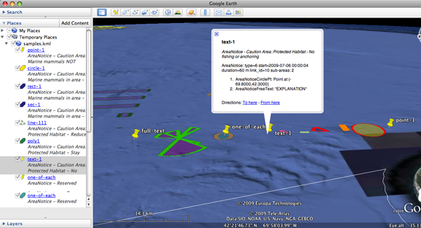
Remember that this is an initial 0.1 release. Issues:
- I am pretty sure that the JSON is not right for starters.
- The MMSI is not getting set in the json output
- No support for rendering to kml for polylines or polygons that span multiple area parts
- There has been no external testing. Will the BBM's work?
- And...
This is a switch in style for me. Normally, I generate XML and python from there, but my XML definitely can't handle the complexity of these messages. I also wanted to try out a more object oriented (OO) approach to the code. There is a parent AIVDM class with a BBM child. AreaNotice inherits from BBM. Hopefully the relationships and spreading of work should make sense. It's really nice to put the __str__ method in the parent so that it always just calls the __unicode__ method. Note that the area types are a different inheritance tree and AreaNotice contains AreaNoticeSubAreas. There is no "is a" relationship there.
07.05.2009 07:26
4th of July
The 4th of July gave me a chance to
see how the iPhone's camera does with low light. It's a bummer that
there is no easy way to mount it on a tripod. It does okay, but not
great.
And a movie...
And a movie...
07.04.2009 16:10
AreaNotice - debugging
I'm getting close to having the
AreaNotice reference implementation available for release. It will
only really support the circle and point types for the initial
release. Here is a preview:
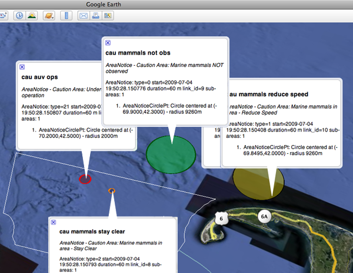
07.04.2009 10:52
generating HTML from python
For a long time now, I've been
generating HTML by hand in python. I just write out the tags as
text and it's up to me to close all the tags and such. I finally
reached the point where I am tired of doing this. I just tried the
E-factory style from lxml and it works well.
% fink install lxml-py26 ipython-py26
% ipython
>>> from lxml.html import builder as E
>>> import lxml.html
>>> table = E.TABLE(E.TR(E.TD('hello'),E.TD('there')))
>>> lxml.html.tostring(table)
'<table><tr><td>hello</td><td>there</td></tr></table>'
>>> table[0].append(E.TD('another column'))
>>> lxml.html.tostring(table)
'<table><tr><td>hello</td><td>there</td><td>another column</td></tr></table>'
07.04.2009 09:55
Browser geolocation - chartviewer
Virgil just sent me a note that he
has updated his EarthNC
ChartViewer web map interface to use the latest in browser
geolocation. If you are using Firefox 3.5 (HTML 5) it will ask you
at the top to share your position. For other browsers, it will try
a couple of other methods. Once it gets your position, the chart
view will snap over to your location.
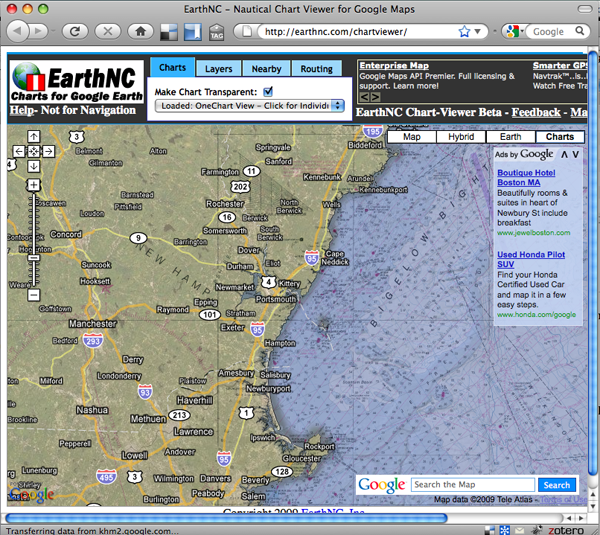
07.04.2009 08:20
Google Tech talk - take 2
The original video
of my Google Tech Talk was pretty good. It looks like Google remade
the video trying to highlight the figures better. When I get a
little bit more time, I will try to remaster the whole thing using
the actual figures from the powerpoint. The quality of this newer
video is not great.
07.04.2009 08:07
Healy and Seattle
While we've been pelted with rain the
last few days, I found this image from the Healy... we finally have
some sun today and might actually have a clear weekend.
20090703-0320.jpeg full size
The Healy is getting ready for it's next research cruise, which looks to be only a couple of days. My science data and aloftcon visualizations for the Healy will kick in when the ship gets underway. The science reports only contain a ZDA NMEA time string until all the science instruments are turned on. The same goes with the aloftcon images... the images are being collected, but the position and weather information is not currently available.
Kurt's Healy Visualizations
20090703-0320.jpeg full size

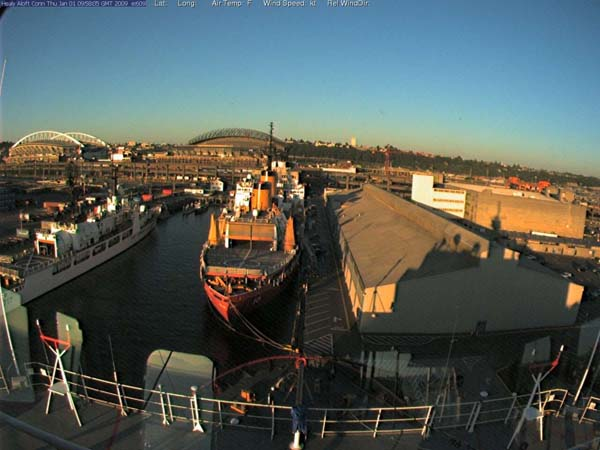
The Healy is getting ready for it's next research cruise, which looks to be only a couple of days. My science data and aloftcon visualizations for the Healy will kick in when the ship gets underway. The science reports only contain a ZDA NMEA time string until all the science instruments are turned on. The same goes with the aloftcon images... the images are being collected, but the position and weather information is not currently available.
Kurt's Healy Visualizations
07.03.2009 09:54
iPhone 3GS - first images
Last night, I picked up an iPhone
3GS! Pretty exciting. I gave the camera a try this morning and it
did okay with the gray weather that we are having in NH. The image
sync with iPhoto is super fast - my old digital camera takes a
minute or two as apposed to about 2 seconds for the iPhone. Here is
a small piece of the image:
I shrank the image down so you can see the whole thing:
It's worth a second to take a look at the EXIF headers:
I shrank the image down so you can see the whole thing:
It's worth a second to take a look at the EXIF headers:
% fink install jhead
% jhead IMG_0006.JPG
File name : /Users/schwehr/Desktop/IMG_0006.JPG
File size : 1265684 bytes
File date : 2009:07:03 09:36:45
Camera make : Apple
Camera model : iPhone
Date/Time : 2009:07:03 07:10:49
Resolution : 2048 x 1536
Focal length : 3.8mm
Exposure time: 0.017 s (1/60)
Aperture : f/2.8
ISO equiv. : 78
GPS Latitude : N 43d [snip]
GPS Longitude: W 70d [snip]
Comment : {
Comment : AEAverage = 193;
Comment : AELimitsReached = 0;
Comment : AEStable = 1;
Comment : AFStable = 1;
Comment : AFStatus = 4;
Comment : AGC = 287;
Comment : AWBBGain = 194;
Comment : AWBGGain = 64;
Comment : AWBRGain = 137;
Comment : AWBStable = 1;
Comment :
If you say yes, the camera geocodes the images quite nicely. The
camera model isn't very specific.07.03.2009 09:30
Firefox geolocation confusion - now working
The "Give it a try!" link on the firefox
geolocation page works, but following their code is
difficult.
This demo (http://people.mozilla.com/~dolske/tmp/geoloc.html) has easy to follow code, but doesn't work.
Where can I find a simple example that works? Introducing Geode says that I can do:
geolocation-alert.html
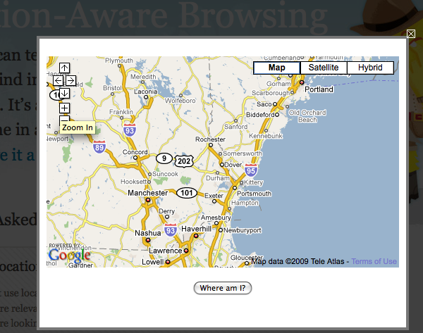
This demo (http://people.mozilla.com/~dolske/tmp/geoloc.html) has easy to follow code, but doesn't work.
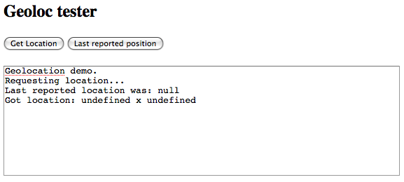
Where can I find a simple example that works? Introducing Geode says that I can do:
navigator.geolocation.getCurrentPosition(function(pos) {
alert( pos.latitude + ", " + pos.longitude );
})
But that doesn't seem to do it. I get the share location request
beneath the navigation bar, but then I get null back for the
position... a little digging, and I found that the return structure
has changed since the initial design. Here is a super simple
working example. Instead of pos.longitude, it uses
pos.coords.longitude.geolocation-alert.html
<html dir="ltr" xml:lang="en-US" xmlns="http://www.w3.org/1999/xhtml" lang="en-US"><head>
<script type="text/javascript">
navigator.geolocation.getCurrentPosition(function(pos) {
alert( pos.coords.latitude + ", " + pos.coords.longitude );
})
</script>
Firefox could use an update to their page to point to this working
demo: geoloc-new.html07.03.2009 08:22
FireFox 3.5 location aware
Note: If you have Firefox 3.5, this
is built in to the browser by default: Firefox
Geolocation. Try this URL, which doesn't work for me: Local food -
http://azarask.in/local/. Now the real question is: How do I
tell these services where wifi access points are located if it
doesn't already know? I'd like to add access points that I am
frequently around that aren't in the Google Location
Services.
Google and Mozilla Team Up to Tell Firefox Where You Are [webmonkey]
Google and Mozilla Team Up to Tell Firefox Where You Are [webmonkey]
Google and Mozilla have partnered to geo-enable the next wave of web applications in Firefox, the companies announced Thursday. The latest version of Firefox - 3.5 ... will use Google's Location Service as its default location provider. ... Once the user provides a web app with permission to do so (the geolocation abilities are opt-in, as they should be) the application can use the browser to determine the user's location. This means developers can provide more accurate local search results and other geo-aware functionality ... ...Mozilla launched the Geode project, a location awareness add-on for Firefox, Yahoo brought us Fire Eagle and the Geocoder API, Google gave us Latitude and Microsoft is developing Vine. ...And Inferring context from the environment [Magic Ink]
Geographical location. Similarly, the most interesting spatial landmark is usually "here." Unfortunately, this currently can be harder to determine automatically, but the payoff is enormous.* Obviously, a software roadmap needs to know the user's location, but so does the bus schedule, as well as business listings, transportation planners, travel guides, and much other information software. * I believe that location is such vital context, Powerbooks should come with GPS receivers pre-installed, with an easy software API. Developers would then write software to take advantage of it, and other computer makers would follow suit. Someday, a computer without GPS might seem as silly as a computer without a clock.Just a reminder, GPS is first and formost a clock. No time, no GPS position. One day soon, I hope to install the latest version of linux or Mac OSX and discover that it is preconfigured to be a stratum 1 NTP timeserver (and PTP) using the built in GPS chip with a fallback to the a mobile phone service (e.g. CDMA) time source. As a reminder, this is how you check how ntp is doing:
% ntpq -p -n
remote refid st t when poll reach delay offset jitter
==============================================================================
-132.177.137.2 209.123.234.24 3 u 414 1024 377 4.680 4.171 0.221
-72.18.205.156 128.138.140.44 2 u 348 1024 377 79.530 -6.882 0.450
+69.10.36.5 64.90.182.55 2 u 479 1024 377 36.526 -3.959 0.540
-38.117.195.101 209.51.161.238 2 u 471 1024 377 12.920 7.163 0.164
*207.171.30.106 .PPS. 1 u 514 1024 377 79.463 3.569 2.720
+72.18.205.157 128.138.140.44 2 u 1611 68m 377 79.433 -6.352 1.356
66.70.29.130 66.250.45.2 3 u 46h 68m 0 18.614 -3.436 0.000
-65.255.217.202 69.36.241.112 3 u 1654 68m 377 79.327 10.225 3.076
127.127.1.0 .LOCL. 13 l 62 64 377 0.000 0.000 0.001
07.03.2009 08:17
Reson multibeam movies
Reson has put some of movies from
their systems up on YouTube:
07.03.2009 08:09
MATE ROV Competition
NOAA DYI ROV (aka mini-submarine in a bucket) [sea-fever].
Thanks to Art, I have the guide book for this sitting on my
shelf.